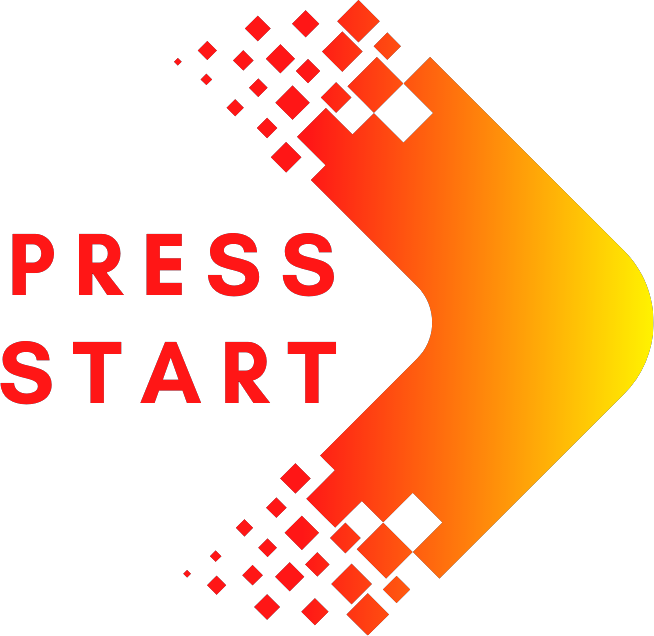

nace el 28 de Febrero del 2024 con un grupo de jugadores que tras ver que no existía un sitio específico en el que jugadores y equipos se pudiesen encontrar con facilidad deciden crear una comunidad que pueda unir a aquellos interesados en la escena competitiva.

ofrecer a la comunidad gamer una herramienta donde encontrar todo aquello relacionado a la escena competitiva de los videojuegos, buscamos crear una comunidad en la que todos puedan tener su lugar, jugadores, equipos y espectadores, poniendo al alcance de cada usuario las herramientas y medios necesarios para conseguir sus objetivos.

A los jugadores buscamos ofrecerles la posibilidad de promocionarse y ofrecerse a participar en competiciones a la vez que pueden ser candidatos para un equipo, para los equipos ofrecemos un sitio donde poder encontrar jugadores o bien darse a conocer, también ofrecemos a aquellos que quieren visualizar las competencias la posibilidad de mirar partidas en vivo o bien revivir una partida pasada y volver a disfrutar de esta.
En Little eSports queremos destacar por ser amigables a los nuevos jugadores que quieran entrar al ámbito competitivo, promoviendolos de cara a los equipos, facilitando así su acceso al mundo competitivo.

|
Jugadores, queremos llegar a todas aquellas personas que quieran participar en competiciones o incluso formar parte de un equipo, estas personas no requerirán de ninguna experiencia previa, ni de ningún requisito más allá de los que solicite el equipo o competencia en concreto. | |
| Equipos, otro cliente objetivo que tenemos es cualquier equipo que desee buscar nuevos integrantes, promocionarse, o meramente participar en competencias, estos equipos podrán solicitar jugadores que cumplan ciertos requisitos que ellos estimen necesarios, permitiendo así conseguir al jugador que mejor se adapte a sus necesidades. |

|
|
| Espectadores, por último, otros clientes que nos interesan son los espectadores quienes podrán visualizar los partidos de un equipo o competición, estos partidos estarán siempre y cuando la competición y/o los equipos involucrados estén de acuerdo. | ||
 Little eSports emerge el 28 de Febrero del 2024 como respuesta a la inquietud de un grupo de jugadores que percibieron la carencia de un espacio específico donde la comunidad gamer pudiera conectarse de manera sencilla. Este proyecto nace con la intención de crear una comunidad que sirva como punto de encuentro para jugadores y equipos interesados en la escena competitiva de los videojuegos.
El propósito fundamental de Little eSports es proporcionar a la comunidad gamer una herramienta integral que abarque todos los aspectos relacionados con la escena competitiva de los videojuegos. La misión es forjar una comunidad inclusiva donde todos los entusiastas encuentren su lugar, ya sean jugadores, equipos o espectadores. Little eSports se compromete a poner al alcance de cada usuario las herramientas y medios necesarios para alcanzar sus metas dentro del ámbito competitivo.
Si bien para empezar en los eSports se requiere de un gran nivel individual para destacar y ser un candidato interesante de cara a los equipos, no obstante a veces es difícil encontrar un lugar en donde buscar un equipo o un sitio especializado en donde promoverte como jugador, aquí vemos la necesidad de una herramienta que facilite, a los jugadores capacitados e interesado, una entrada a la escena competitiva
Una red social en la que la comunidad gamer pueda encontrar todo lo relacionado a la escena competitiva de los videojuegos, centrado principalmente en la competencia de jugadores y equipos, ofreciendo a su vez entretenimiento a aquellos que solo buscan observar las partidas.